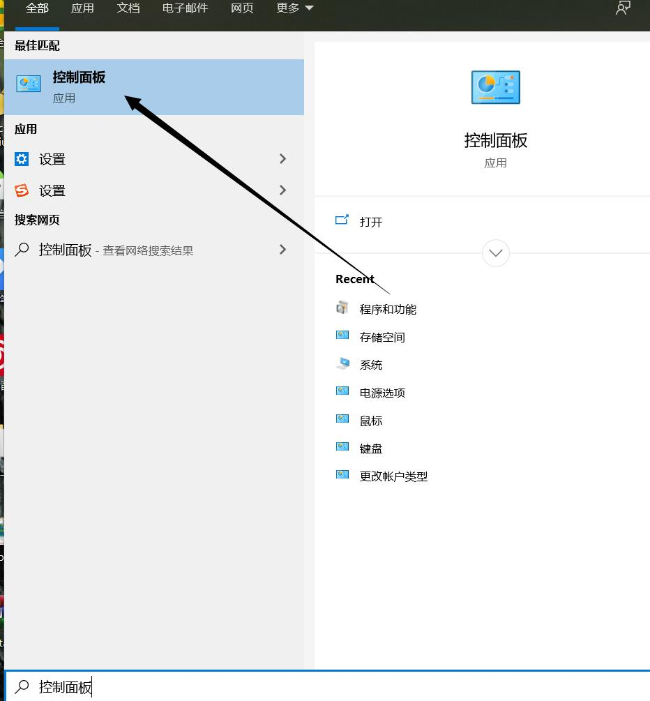
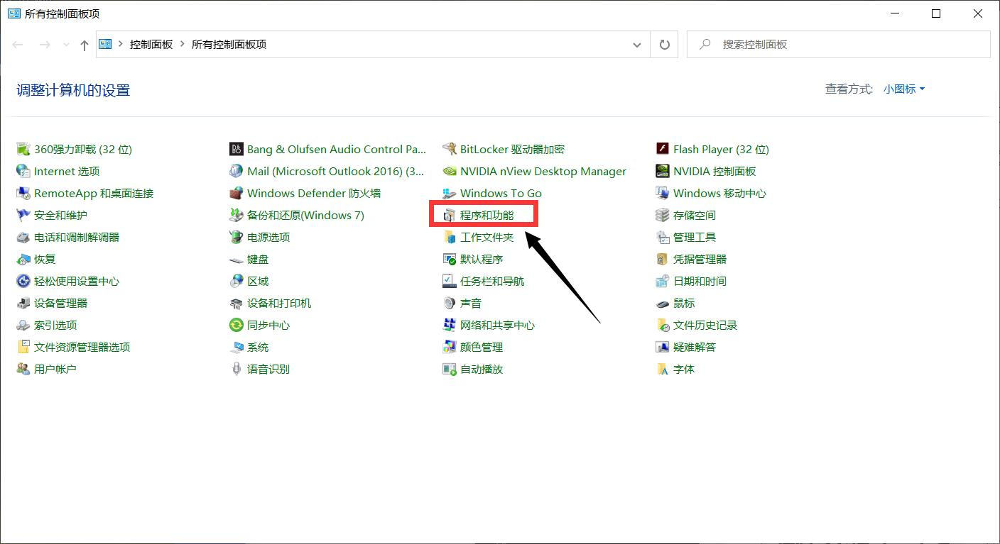
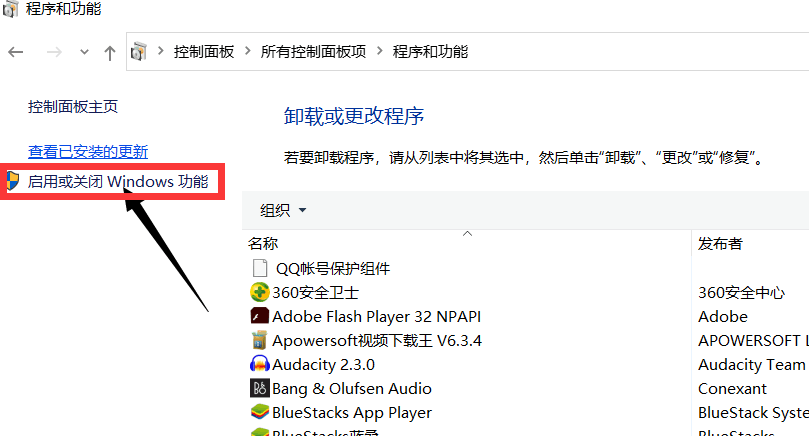
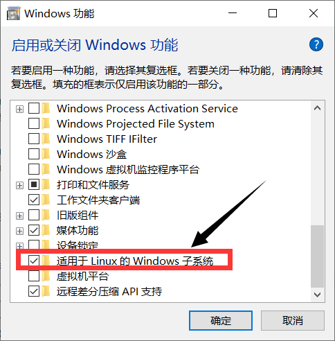
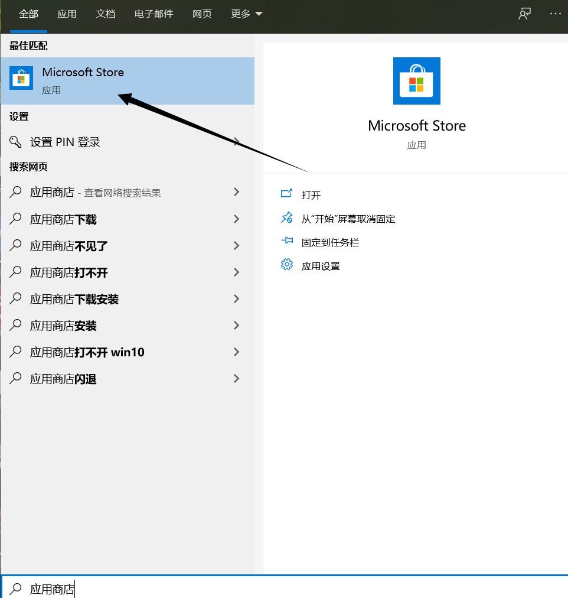
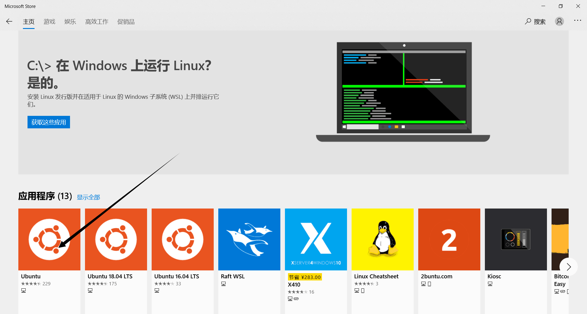
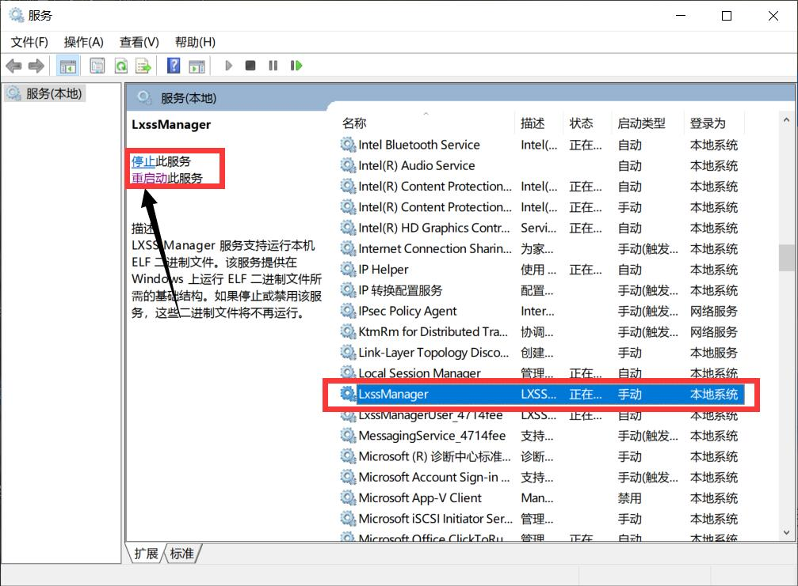

系统使用教程
启用子系统ubuntu
- 在搜索中搜索控制面板并打开

- 在控制面板中找到程序和功能

- 点击启用或关闭windows功能

- 找到并勾选适用于linux的windows子系统, 然后点击确定

下载子系统ubuntu
- 在搜索中搜索应用商店

- 在应用商店中搜索ubuntu

- 然后点击需要下载的系统, 根据提示下载安装即可
重启子系统ubuntu
- win + r 输入 services.msc
- 找到LxssManager服务后就可以控制
开启/停止/重启

文件共享
win访问子系统ubuntu文件
windows子系统ubuntu的rootfs路径 C:\Users\Administrator\AppData\Local\Packages\CanonicalGroupLimited.UbuntuonWindows_79rhkp1fndgsc\LocalState\rootfs
在子系统ubuntu中访问win文件
在 /mnt/ 下可以看到windows上的盘符.
远程桌面
- 安装xorg
xorg是xfce桌面需要的一个基础依赖sudo apt-get install xorg - 安装xfce4
sudo apt-get install xfce4 - 安装xrdp
xrdp通过远程桌面的方式访问另一台主机sudo apt-get install xrdp - 配置
配置文件/etc/xrdp/xrdp.ini
默认端口3389, 如果需要可以修改 - 向xsession中写入xfce4-session
sudo echo xfce4-session >~/.xsession - 重启xrdp服务
sudo service xrdp restart
接下来就可以使用windows自带的远程桌面功能连接了.
开机自启服务
ssh服务
子系统不同于真正的ubuntu系统, 有很多服务不会开启自启, 需要自己配置才行. 设置和真正的ubuntu有些差异.
设置ssh服务开机自启
- 修改子系统文件
编辑/etc/rc.local文件(如果没有该文件, 则创建新文件).
添加如下内容(重复的内容不必重复添加)
#!/bin/sh -e
service ssh start
exit 0
编辑/etc/sudoers文件
添加如下内容(免去密码输入)
%sudo ALL=NOPASSWD: /etc/rc.local
- 修改win10自启文件(修改或创建时需要一定的权限)
- win + r
- 输入
shell:startup进入启动文件夹 - 创建名字为
wls_rclocal.vbs的vbs文件(名字随便,后缀要对,内容要对) - 添加如下内容到wls_rclocal.vbs
set ws=wscript.createobject("wscript.shell") ws.run "C:\Windows\System32\bash.exe -c 'sudo /etc/rc.local'",vbhide - 或添加如下内容
Set ws = WScript.CreateObject("WScript.Shell") ws.run "ubuntu run sudo /etc/rc.local start", vbhide
其他自启服务同ssh
问题
无法登陆子系统
通过xshell连接不上
在windows搜索中搜索bash, 打开后即进入子系统.
进入到windows子系统后就可以检查sshd服务是否开启或者其它原因
开启sshd服务
# ubuntu
service ssh start
# centos
systemctl start sshd
启动ssh服务时报错
Could not load host key: /etc/ssh/ssh_host_rsa_key
Could not load host key: /etc/ssh/ssh_host_ecdsa_key
Could not load host key: /etc/ssh/ssh_host_ed25519_key
如下解决方法
# 傻瓜式操作, 卸载重装openssh-server
apt remove openssh-server
apt install openssh-server
xshell登录时只允许publickey登录
这时先通过windows bash登录,然后修改 /etc/ssh/sshd_config 配置的 PasswordAuthentication no 配置项,把no改为yes后, 重启ssh服务(service ssh restart)
通过xshell连接报密码错误,或连接到其它地方
windows自己有开启sshd服务, 进入任务管理器,找到sshd相关服务关掉即可
使用cmake报错
错误信息
No CMAKE_CXX_COMPILER could be found.
解决
sudo apt-get install -y build-essential